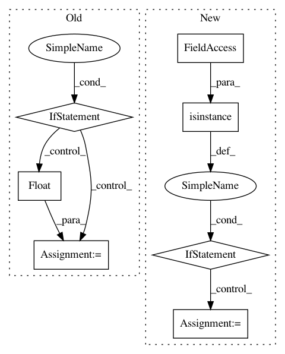

590e29dd3dca1f837ab70c67f3a628c7ee032ac9,pysb/simulator/cupsoda.py,CupSodaSimulator,_get_cmatrix,#CupSodaSimulator#,452
Before Change
rate = 1.0
for r in rate_args[j]:
x = str(r)
if x in par_names:
rate *= par_vals[i][par_dict[x]]
else:
// FIXME: need to detect non-numbers and throw an error
rate *= float(x)
// volume correction
if self.vol:
rate *= (N_A * self.vol) ** (rate_order[j] - 1)
c_matrix[i][j] = rate
self._logger.debug("100%")
After Change
for j in range(self._len_rxns):
rate = 1.0
for r in rate_args[j]:
if isinstance(r, pysb.Parameter):
rate *= par_vals[i][par_names.index(r.name)]
elif isinstance(r, pysb.Expression):
raise ValueError("cupSODA does not currently support "
"models with Expressions")
else:
rate *= r
// volume correction
if self.vol:
rate *= (N_A * self.vol) ** (rate_order[j] - 1)
c_matrix[i][j] = rate
self._logger.debug("100%")
In pattern: SUPERPATTERN
Frequency: 3
Non-data size: 7
Instances
Project Name: pysb/pysb
Commit Name: 590e29dd3dca1f837ab70c67f3a628c7ee032ac9
Time: 2017-05-01
Author: alubbock@users.noreply.github.com
File Name: pysb/simulator/cupsoda.py
Class Name: CupSodaSimulator
Method Name: _get_cmatrix
Project Name: Scitator/catalyst
Commit Name: aab3902d4a7d55f5a86058854adc36b8a12c873f
Time: 2019-05-20
Author: ekhvedchenya@gmail.com
File Name: catalyst/dl/callbacks/base.py
Class Name: OptimizerCallback
Method Name: on_batch_end